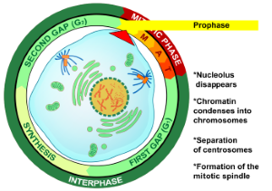

Prophase
Prophase is the initial phase of mitosis and meiosis, a period of cell division where
chromosomes condense and become visible, and the mitotic spindle begins to form. During
prophase DNA, which was diffuse chromatin during interphase, condenses into distinct chromosome.
Key events during prophase:
Chromatin Condensation:
The genetic material, initially in a loosely organized form called chromatin, condenses and coils up,
becoming visible as individual chromosomes.
Sister Chromatid Formation:
Each chromosome is composed of two identical sister chromatids, joined at the centromere, giving them
an X-shaped appearance.
Mitotic Spindle Formation:
The mitotic spindle, which is composed of microtubules, begins to form from the centrosomes (or poles
in plant cells).
Nuclear Envelope Breakdown:
The nuclear envelope, which surrounds the nucleus during interphase, begins to break down.
